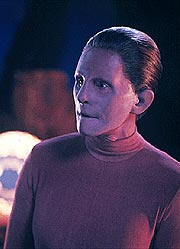
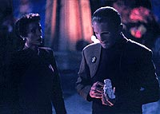
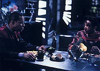
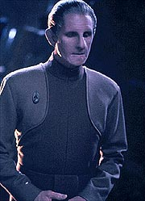
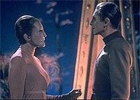

MANCHETE
DO EPISDIO
Sequncia
erra ao "economizar" tempo
para concluir histria em dois episdios
Episdio
anterior | Prximo
episdio
Sinopse:
Data Estelar: 48213.1.
A Fundadora diz a Odo que de fato
este o seu planeta natal. Isso no traz sossego a Odo, que
continua cheio de perguntas e insatisfeito com as respostas que
ela est fornecendo. A Fundadora diz que ela, Odo e todos os
demais transmorfos so parte do "Grande Elo". Fundindo
o seu brao com o dele, Odo experimenta uma breve e pequena
amostra desse "Elo" e finalmente tem certeza de ter
chegado em casa. Kira claramente a forasteira neste cenrio e
diz que vai tentar contatar Sisko, a Fundadora diz que no pode
permitir isso, porque a transmisso pode fornecer a localizao
do seu mundo. Mais tarde Kira diz a Odo que vai tentar usando uma
tcnica que no pode ser rastreada (e que Sisko conhece).
Um casulo de fuga da Defiant ocupado por Sisko e Bashir voando s
cegas encontrado por uma nave de busca com Dax e O'Brien a
bordo. Jadzia diz que conseguiu contatar os Fundadores em seu
cativeiro e que grandes mudanas esto em progresso em DS9. Um
tratado de paz entre a Federao e o Dominion deve ser assinado
em questo de dias, como confirma a almirante Nechayev, quando do
retorno de Sisko estao.
Tudo parece correr bem, mas Sisko est desconfiado da ostensiva
presena de soldados Jem'Hadares na estao. Sisko se encontra
com Borath, que se apresenta como um Fundador. O fato de Borath
ser da mesma espcie de Eris (de "The Jem'Hadar") s
preocupa mais o comandante. Quando Sisko descobre que os Romulanos
esto sendo excludos das negociaes, ele j tem certeza que
algo est errado, mas a almirante continua a dizer que tudo est
correndo de acordo com os interesses da Federao.

De
volta ao quadrante Gama, Kira no consegue enviar a mensagem
devido interferncia de uma fonte de energia artificial no
planeta. Pesquisando o local de tal "fonte", ela
descobre uma porta com trava, algo sem utilidade para os
transmorfos. Odo recebe lies sobre mudar de forma e sobre a
histria do seu povo. A Fundadora explica que no passado os
transmorfos vagaram pelo Universo procurando meios para aumentar o
seu conhecimento sobre o cosmos, mas s encontraram a desconfiana
e a selvageria dos slidos e terminaram por se isolar neste
mundo. Mas, ainda curiosos, enviaram 100 "bebs
transmorfos" para o Universo. a fim de expandir seu
conhecimento atravs deles. Odo foi o primeiro desses a retornar
ao lar. A Fundadora e Odo fundem completamente os seus corpos em
uma demonstrao completa do Elo.
Em DS9, O'Brien surrado pelos Jem'Hadares no Quark's, e
Eddington no os prende alegando estar "cumprindo
ordens" da almirante, que o instruiu pessoalmente a dar
"espao de manobra" aos Jem'Hadares. Sisko descobre que
os seus oficiais esto sendo transferidos e que a Frota est
deixando o setor Bajoriano, deixando-o de mo beijada para o
Dominion. As objees de Sisko so tardias, a almirante diz que
o tratado j foi assinado. Depois que uma desarmada T'Rul
morta por um Jem'Hadar, Sisko d "uma basta" na situao,
organizando uma misso suicida com Bashir, Dax, O'Brien e Garak
(que morre na fuga do grupo da estao). A misso: levar o
explorador Rio Grande at a borda da Fenda Espacial e sel-la
permanentemente com torpedos fotnicos para impedir a entrada das
foras do Dominion no quadrante Alfa. Eles tm sucesso
na misso (ou ser que no?).
De volta ao outro lado da galxia, Odo diz que vai ficar com o
seu povo, mas faz um ltimo favor a Kira, abrindo a j citada
"porta". Para espanto deles, a dupla encontrada e
escoltada por soldados Jem'Hadares para o interior da instalao,
em uma cmara onde Sisko, Bashir, Dax, O'brien e T'Rul se
encontram inconscientes e conectados a estranhos equipamentos.
Borath tambm est presente e diz que os oficiais estiveram
sendo submetidos a um experimento de manipulao mental, sobre
como eles reagiriam a uma tentativa de estabelecimento de uma
presena do Dominion no quadrante Alfa. Quando a Fundadora entra
no local, Odo descobre que a sua raa na realidade a dos
Fundadores do Dominion, que decidiram eras atrs impor ordem a um
Universo considerado por eles catico e nocivo a sua existncia.
Controlar a tudo e a todos deforma que nunca mais pudessem ser
feridos. Borath um dos Vortas (assim como Eris) que servem os
Fundadores, assim como os Jem'Hadares.

Odo
no pode sancionar as atitudes de seu povo e decide retornar com
o resto de seus companheiros para DS9 a bordo da Defiant (que
estava em rbita do planeta o tempo todo). A Fundadora concorda
(relutantemente) e deixa Odo seguir seu caminho juntamente com os
seus companheiros.
Comentrios:
O ambicioso cliffhanger da semana passada concludo aqui de
uma forma extremamente decepcionante com o grosso do episdio
reduzido por uma triste "reviravolta" de trama (acima de
tudo bastante esperada) a uma simulao em realidade virtual do
Dominion (em um de fato "reset button"). Temos uma boa
dose de senso de deslumbramento com Odo e a Fundadora, mas a deciso
final de deixar o seu planeta natal parece ter ficado para os
produtores e no para o chefe de segurana de DS9. Saibam mais
detalhes, sem ter que selar nenhuma Fenda Espacial no processo,
nas linhas abaixo.
Resolver em um contexto de ao-aventura o cliffhanger da semana
passada seria provavelmente uma tarefa para mais de um episdio.
Compactando o que deveria ser expandido e usando em partes os
personagens mais como elementos de trama do que pessoas, o episdio
deixa um gosto ruim na boca do f. De fato a escrita aqui parece
mais preguiosa do que de costume, com alguns belos furos.

Para
comear, no explicado como Odo conseguiu escapar na nave
auxiliar ao final da primeira parte. Ele no um bom piloto e
havia pelo menos cinco naves Jem'Hadares no local. E mesmo que
eles (reconhecendo-o como um Fundador) o tivessem deixado partir,
seria difcil que eles conseguissem fazer isso sem o comissrio
perceber o ocorrido. Entretanto continuo no vendo problemas com
ele chegando nave auxiliar atravs dos corredores da Defiant
carregando Kira.
(O fato de os soldados Jem'Hadares abordarem a Defiant de uma
forma no letal na primeira parte fica bem explicado com a
reviravolta do final da segunda.)
O fato de os "100 bebs enviados ao Universo" terem
sido programados com o desejo de voltar para casa no justifica
por que justo agora Odo sentiu este desespero para voltar ao lar,
uma vez que ele j havia vindo anteriormente para o quadrante
Gama (ver "Shadowplay").
Tentar racionalizar que esta foi a primeira vez que ele se sentiu
realmente sozinho e foi isso que desencadeou a sua lembrana
meio forado e abrupto, mas parece ser esta a noo em que os
produtores se basearam para desenvolver esta parte da histria
(se o roteiro da primeira parte tivesse deixado claro que o
"gatilho" foi a viso da nebulosa Omarion, teria sido
mais fcil de aceitar).

A
"Simulao em Realidade Virtual do Dominion" (TM) pode
ser analisada sob a perspectiva da audincia e a do prprio
Dominion. Como s tivemos tomadas de localizao do planeta
errante, isso indica implicitamente que toda a ao do episdio
ocorre nele, da decorre que algum tipo de cenrio de realidade
virtual estava em ao para sustentar as cenas de Sisko e cia.
"em DS9" --simples assim. Alm disso, pistas foram
deixadas (com a sutileza de uma manada de mamutes em fria, devo
dizer) para indicar que se tratava realmente de "uma situao
irreal", sendo a morte de Garak e o colapso da Fenda Espacial
as proverbiais "cerejas no bolo" dessa atitude do
roteiro.
Gosto de pensar que o Dominion testou diversos cenrios com eles
(o que o roteiro no parece garantir). Julgando somente por esta
simulao, os Fundadores no parecem ser as mais pacientes
criaturas ou mesmo as mais espertas, pois tudo que apresentado
parece pedir por uma atitude radical por parte de Sisko, o que
definitivamente no uma boa estratgia. Talvez o melhor cenrio
fosse fazer uma simulao que se desse ao longo de vrias dcadas,
mostrando como o Dominion iria absorvendo gradualmente a Federao
sem ela perceber. Provavelmente algo assim no foi tentado, por
ser dificilmente compatvel com o cenrio de Odo e Kira no
planeta errante.
Apesar de toda frustrao que a simulao traz ao espectador
ao seu final, tivemos boas cenas como as de Sisko e Borath e Sisko
e Garak, ambas bastante bem dirigidas por Frakes. J a
"piada da semana" de Quark --justia seja feita, uma
recriao do Dominion-- foi bem ruim desta vez.
O "outro lado da histria" (ou seria da galxia?)
funcionou melhor, sendo um dos poucos problemas ver Kira falando
com uma floresta (que poderia ser facilmente um bando de
Fundadores disfarados) e descrevendo todo o seu plano de ao.
Todos os momentos entre Kira e Odo foram genuinamente tocantes e
as cenas entre o comissrio e a Fundadora foram preenchidos com
um bem-vindo senso de deslumbramento.
A histria dos Fundadores foi interessante, com seu ressentimento
e parania com relao aos "slidos" (cuja memria
deve ser integralmente preservada no Grande Elo) levando ao longo
do tempo formao de um imbatvel Imprio com tanto poder
que nunca surgiu nenhuma situao que os fizesse reavaliar (de
uma forma ou de outra) a sua atitude com relao aos "slidos".
De fato interessante, mas bem bsica em termos de vilania.
O frustrante que a revelao final de que o seu povo de fato
o dos Fundadores do Dominion no d margem a nenhum tipo de
escolha a Odo. Se ele no escolhesse partir, a srie
literalmente no poderia continuar, pois todo o elenco iria
permanecer prisioneiro do Dominion. sempre pssimo quando um
personagem usado dessa forma (isto sem falar que a demisso de
Odo e o conflito dele com Eddington foram convenientemente
varridos rapidamente para debaixo do tapete).

Gostei
quando a Fundadora jogou que Odo busca trazer a ordem ao Universo
assim como todos os outros do Grande Elo, e no justia. Alis,
gostaria que um maior tempo (sempre o "tempo") tivesse
sido dado para Odo permanecer entre os de sua espcie (e
continuar seu aprendizado da histria e dos costumes do seu povo)
antes de se dar a "grande revelao" (a qual em
conceito interessante), o que levaria a uma escolha real do
comissrio, no forada de barra apresentada aqui. Para ser
bastante sincero, os produtores s colocariam essa questo
(escolher viver entre os de sua espcie ou em DS9) de uma forma
realmente justa e equilibrada para Odo em "Chimera",
da stima temporada da srie (para referncia futura: Odo
decidiu ficar no planeta, com Kira partindo, antes de descobrir
que a sua espcie era a dos Fundadores do Dominion).
As "vozes" dos personagens voltaram ao normal depois das
instabilidades da semana passada. A direo de Frakes foi muito
boa (especialmente por termos um cenrio de realidade virtual em
andamento) nas cenas "na estao" (excluindo a da
"morte" de T'Rul). Uma parte especialmente bem dirigida
foi a cena final da fuga de Sisko e seus oficiais (a msica de
Chattaway tambm ajudou). Entretanto o alter-ego de Riker pisou
feio na bola nas cenas do planeta errante. Os grotescos, toscos E
incrivelmente falsos cenrios do planeta tiveram as suas
"melhores" qualidades amplificadas pelas tomadas amplas
de Frakes, de uma tal maneira que as cenas chegam a ser
constrangedoras. Parece um bvio palco de teatro com uma
descarada parede azul ao fundo. Uma lstima s!
Brooks se saiu muito bem. Um cenrio de crescente tenso e
antagonismo sempre favoreceu o ator. O destaque fica para
Auberjonois, talvez o maior responsvel pelo episdio no ter
ido totalmente para a privada. Sai tanta emoo e sub-texto
debaixo de toda aquela borracha que chega a ser desconcertante s
vezes. Visitor trabalhou muito bem com Auberjonois (como usual) e
o resto do elenco honrou o pagamento es.
Robinson roubou a cena dentre os convidados (como usual) e
acredito que ele fez um esforo de fazer um Garak virtual
sutilmente diferente do real, belo trabalho (Garak sempre um
trunfo em termos de excelentes dilogos potenciais,
entretenimento e imprevisibilidade). Jens foi outra excelente
presena e sua leitura clara e suave sempre um prazer de ouvir
(um contraste perfeito para os seus funestos desejos de trazer
"ordem ao Universo"). Os demais convidados ficaram na
neutralidade, a menos de Dennis Christopher, que patinou feio como
o real Borath no final (alm de soar totalmente desrespeitoso com
relao a Odo --o que no faz muito sentido para um Vorta).
A plausibilidade cientfica do planeta errante no pode ser
discutida porque ns no sabemos o quanto de tecnologia foi
incorporado a ele pelos Fundadores. Ele deve ter um mecanismo de
interferncia bastante eficiente para impedir que os sensores da
nave auxiliar detectassem as atividades dos transportes dos
prisioneiros ou pelo menos a Defiant orbitando o planeta.
Os Fundadores, enquanto cultura, ganharam um bocado. "Ser uma
coisa conhecer esta coisa". Uma perfeita definio do
modo de vida dos transmorfos que Odo mal consegue comear a
entender. Ficam claras aqui as limitaes das habilidades de Odo
quando comparadas s dos seus irmos, o que daria assunto para
episdios posteriores.
Nunca foi explicado durante a srie por que os demais transmorfos
assumem sempre uma forma humanide bsica similar de Odo (alm
de servir de indicador para a audincia da srie, claro). O
que mais curioso que as feies de Odo vm de uma emulao
parcial do rosto de um "certo" cientista Bajoriano que o
ajudou em seu desenvolvimento inicial (Dr. Mora Pol, visto em "The
Alternate"). Temos um "pilar" similar quele
de "The
Alternate" no cenrio do planeta dos Fundadores,
sinal de que a pista daquele episdio era mais quente do que
pareceu ser, quanto origem do povo de Odo.
Nunca ficou muito claro durante a srie o que quer dizer
"recm-formado" para um transmorfo. Tambm nunca foi
exclarecido como Odo foi "enviado ao Universo" pelo seu
povo, como chegou Fenda Espacial e como ele foi encontrado no
cinturo Denorios. Nunca foi mostrada em tela a definitiva
designao oficial da Defiant para DS9. Nem foi explicado por
que T'Rul voltou para Romulus e deixou o dispositivo de camuflagem
na Defiant.
A simulao do Dominion (apesar da frustrao que sua utilizao
acabou por produzir no espectador aqui) levou a alguns pontos
interessantes que afetariam alguns episdios mais tarde na srie:
o Dominion tem conhecimento e tecnologia absolutamente inacreditveis
no tocante ao entendimento da mente de qualquer criatura
(definitivamente os Fundadores tm uma perspectiva nica sobre o
assunto, devido ao seu modo de vida). Eles fizeram registros das
respostas dos participantes da simulao. Garak parece
introduzir um elemento de imprevisibilidade que nem os Fundadores
parecem entender muito bem. Os Romulanos so claramente um
elemento crtico para a estratgia do Dominion, que considera os
Cardassianos mais previsveis do que os primos distantes dos
Vulcanos. E fica claro para o Dominion a potencial estratgia de
fechar a Fenda Espacial por parte da Federao, se uma invaso
se fizer iminente.
Levar os prisioneiros (Sisko e cia.) para serem interrogados no
seu planeta natal no parece uma medida muito inteligente dos
Fundadores (sem falar em deix-los partir com a localizao do
seu mundo --alis, com a tecnologia que eles mostraram, no
deveria ser muito difcil apagar da mente de nossos heris e dos
computadores da Defiant todo o incidente).
O Borath virtual parece indicar que Eris continua viva e contou a
ele sobre o incidente de "The
Jem'Hadar", o que inconsistente com o restante da
srie. Provavelmente o real Borath conhece melhor esta histria.
"The Search, Part II" um fraco episdio de DS9,
quebrando uma srie que j acumulava nove episdios
"vencedores" desde a temporada passada. Apesar dos bvios
furos do roteiro, o que incomoda mais o mau tratamento dado aos
personagens aqui. No bastasse a irreal (em mais de um sentido)
simulao do Dominion, a deciso final de Odo deixar o seu
planeta natal e voltar a DS9 parece mais uma deciso do
roteirista, para restabelecer o status quo da srie, do que do
nosso comissrio. Obviamente a semente para vrios episdios
futuros sobre o Dominion e Odo foi plantada aqui, mas no fundo
um segmento que suporta pouco escrutnio.
Citaes
Fundadora - "The link
is the very foundation of our society. It provides a meaning to
our existence. It is the merging of thought and form, the sharing
of idea and sensation."
("O Elo a fundao de nossa sociedade. Ele fornece um
significado nossa existncia. a unio de pensamento e
forma, o compartilhar de idia e sensao.")
Kira - "I don't believe it; I'm talking to a tree."
("No acredito; estou falando com uma rvore.")
Garak - "The only explanation I can find it that our
leaders have simply gone insane."
("A nica explicao que posso encontrar que nossos lderes
simplesmente ficaram malucos.")
Garak - "It's a little foolish to worry about your careers
at a time like this, when there's a good chance we're all about to
be killed."
(" um pouco bobo se preocupar com suas carreiras em uma
hora como essa, em que h uma boa chance de que sejamos todos
mortos.")
Garak - "Didn't anyone tell you? You see, I pretend to be
their friend, and then I shoot you."
("Ningum disse a vocs? Veja, eu finjo ser amigo deles, e
ento eu atiro em vocs.")
Fundadora - "No Changeling has ever harmed another."
("Nenhum transmorfo jamais feriu outro.")
Fundadora - "We will miss you, Odo. But you will miss us
even more."
("Sentiremos sua falta, Odo. Mas voc sentira a nossa ainda
mais.")
Trivia:
 Durante toda a segunda temporada, Ira Steven Behr e Robert Hewitt
Wolfe brincavam entre si sobre a possibilidade de os Fundadores
serem de fato a raa de Odo. Um certo dia, Michael Piller
confidenciou aos dois algo que ele julgava como "uma idia
muito louca": "No seria interessante se os Fundadores
fossem o povo de Odo?" Os trs riram um bocado antes e
depois das explicaes serem dadas e apresentaram o conceito a
Rick Berman, que gostou muito da idia. Em seguida eles chamaram
Rene Auberjonois para uma conversa, contaram a idia assegurando
que Odo no iria deixar a srie (o ator sempre teve uma certa noo
de que no momento em que fosse estabelecida a raa de Odo, o
personagem perderia o seu principal apelo e deixaria de participar
de DS9). Auberjonois ficou meio ctico no incio, mas
logo percebeu que tal manobra, ao invs de diminuir a
complexidade do personagem, de fato a aumentava, fornecendo muito
material para que ele pudesse trabalhar como seu intrprete dali
em diante.
Durante toda a segunda temporada, Ira Steven Behr e Robert Hewitt
Wolfe brincavam entre si sobre a possibilidade de os Fundadores
serem de fato a raa de Odo. Um certo dia, Michael Piller
confidenciou aos dois algo que ele julgava como "uma idia
muito louca": "No seria interessante se os Fundadores
fossem o povo de Odo?" Os trs riram um bocado antes e
depois das explicaes serem dadas e apresentaram o conceito a
Rick Berman, que gostou muito da idia. Em seguida eles chamaram
Rene Auberjonois para uma conversa, contaram a idia assegurando
que Odo no iria deixar a srie (o ator sempre teve uma certa noo
de que no momento em que fosse estabelecida a raa de Odo, o
personagem perderia o seu principal apelo e deixaria de participar
de DS9). Auberjonois ficou meio ctico no incio, mas
logo percebeu que tal manobra, ao invs de diminuir a
complexidade do personagem, de fato a aumentava, fornecendo muito
material para que ele pudesse trabalhar como seu intrprete dali
em diante.
O co-produtor-executivo (feito produtor-executivo ao final da
temporada) Ira Steven Behr admite que a mudana de estilo da
primeira parte para a segunda parte de "The Search"
foi proposital, uma maneira de subverter a expectativa da audincia,
segundo ele. Behr garante que a sua inteno (enquanto
roteirista do episdio) foi apresentar um pequeno drama
envolvendo Odo e utilizar a trama envolvendo Sisko e cia. como um
mero enfeite ("Fireworks and Mirrors", nas palavras
dele). Quanto ao protesto dos fs pelo frustrante desfecho do
episdio que muitos consideraram apenas mais uma variao do
batido "era tudo um sonho", Behr diz que este no foi o
caso aqui e que a forma que os Fundadores manipularam nossos heris
(atravs de implantes de pensamentos e no "sonhos"),
no deveria transmitir nada alm de medo audincia. Medo de
um inimigo absolutamente alm de Sisko e cia. em todos os
sentidos, um inimigo que pode manipul-los desta forma e com esta
facilidade.
Segundo o editor-executivo de histrias, Robert Hewitt Wolfe, o
episdio apresenta claramente o modus operandi do Dominion. Se
eles podem conquistar acesso a territrios atravs de tratados e
manobras diplomticas e absorver civilizaes inteiras de modo
extremamente gradual e lento em seu modo de vida, eles assim o
fazem. Somente se esta rota se mostra completamente incua que
eles partem para a utilizao da fora bruta. E quando chegam a
este ponto, eles o fazem com extrema indiferena, rapidez e eficincia.
Behr ficou extremamente despontado com o visual final do planeta
dos Fundadores, que ele considerou falho em conceito e execuo
(ainda que o visual do "Great Link" tenha agradado a
todos). O cenrio "bastante escuro e cheio de coisas
esquisitas" no funcionou de forma alguma, segundo o
produtor. Entretanto Behr acredita que, apesar de todos os
problemas, o episdio foi um belo veculo para Odo (Rene
Auberjonois) e funcionou principalmente pelos assuntos que
abordou.
A linha "nenhum transmorfo nunca feriu um outro" voltar
para "assombrar" Odo no episdio final da temporada, "The
Adversary".
O episdio introduz mais um Vorta, Borath, ainda que parte do
tempo ele seja referido (como parte da estratgia do Dominion no
episdio) como Fundador. Os produtores pensaram inicialmente em
trazer de volta Molly Hagen, Eris em "The
Jem'Hadar", mas quando a atriz se mostrou no disponvel
eles utilizaram Dennis Christopher como Borath. Enquanto os
Jem'Hadares e os Fundadores continuaro a aparecer de forma freqente
em um futuro prximo na srie, os Vortas s sero vistos
novamente em "To the Death" (quando seria tambm
apresentado o seu principal representante: Weyoun, vivido
magistralmente por Jeffrey Combs), quase no final da quarta
temporada (uma bobeada em termos da organizao da srie por
parte dos seus produtores).
Com o final de A Nova Gerao, Jonathan Frakes teve tempo
para vrias participaes nesta temporada de DS9. Ele
dirigiu este "The Search, Part II", alm de "Meridian"
e Past Tense, Part II". Vale destacar que foi justo
uma fita contendo "Past Tense, Part II" e "Cause
and Effect" (da quinta temporada de A Nova Gerao)
que acabou levando a aprovao da Paramount para que Frakes
pudesse dirigir o filme "Primeiro Contato".
Frakes participa desta temporada de DS9 tambm como ator,
em "Defiant".
De acordo com as normas do Sindicato dos diretores da Amrica
(DGA), os dois diretores de "The Search", Kim
Friedman e Jonathan Frakes, tiveram de estar presentes e dirigir
conjuntamente o final da primeira parte e o comeo da segunda.
Frakes j havia dirigido anteriormente Salome Jens, no episdio "The
Chase", de A Nova Gerao, alm de j ter
(obviamente) trabalhado com Colm Meaney, Natalija Nogulich e Armim
Shimerman na sua antiga srie. O diretor tambm conhecia toda a
equipe atrs das cmeras durante as filmagens.
Foi o editor (montador) Robert Lederman que apontou que Frakes tem
uma espcie de "assinatura pessoal", pois gosta de
colocar a cmera em lugares bastante altos nos cenrios, mesmo
"desafiando tetos existentes em cena". Tal
"assinatura" pode ser conferida na cena em que Kira est
sozinha no planeta dos Fundadores, totalmente isolada, uma
verdadeira forasteira.
Frakes no foi o nico "diretor no nascido diretor"
a trabalhar nesta temporada de DS9. Avery Brooks continuou
sua carreira na direo de episdios da srie (iniciada na
temporada passada com "Tribunal"), com as
seguintes entradas adicionais: "The Abandoned", "Fascination"
e "Improbable Cause". Rene Auberjonois seguiu os
passos de Brooks e comeou a dirigir tambm: "Prophet
Motive" e "Family Business". Mesmo o
cinegrafista Jonathan West fez o seu "debut" na direo
nesta temporada, com "Shakaar".
DS9 manteve a coroa de srie mais assistida em
syndication, com nmeros 20% superiores aos do segundo lugar, da
srie (pasmem) "Baywatch", durante esta terceira
temporada. A introduo da srie "Hercules: The Legendary
Journeys" no afetou muito a audincia de DS9
inicialmente, mas a futura competio conjunta de
"Hercules" e de "Xena: The Warrior Princess"
tornou-se significante em anos posteriores.
Ficha
tcnica:
Histria de Ira Steven Behr
& Robert Hewitt Wolfe
Roteiro de Ira Steven Behr
Direo de Jonathan Frakes
Exibido em 03/10/1994
Produo: 048
Elenco:
Avery Brooks como
Benjamin Lafayette Sisko
Ren Auberjonois como Odo
Nana Visitor como Kira Nerys
Colm Meaney como Miles Edward O'Brien
Siddig El Fadil como Julian Subatoi Bashir
Armin Shimerman como Quark
Terry Farrell como Jadzia Dax
Cirroc Lofton como Jake Sisko
Elenco convidado:
Salome Jens como Fundadora
Andrew Robinson como Elim Garak
Natalija Nogulich como almirante Nechayev
Martha Hackett como T'Rul
Kenneth Marshall como Michael Eddington
William Frankfather como um Fundador
Dennis Christopher como Borath
Christopher Doyle como um oficial Jem'Hadar
Tom Morga como um soldado Jem'Hadar
Diaunt como um guarda Jem'Hadar
Majel Barrett-Roddenberry como a voz do computador